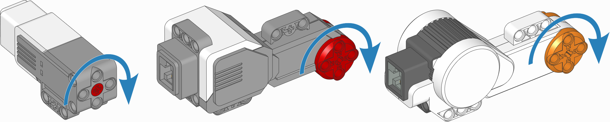
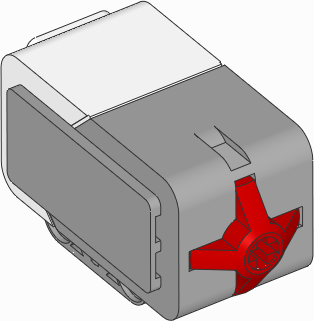
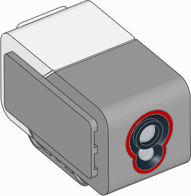
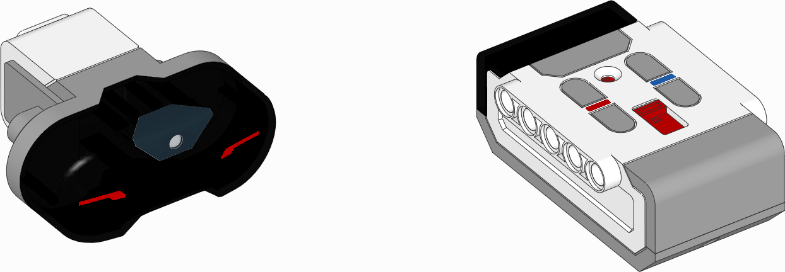
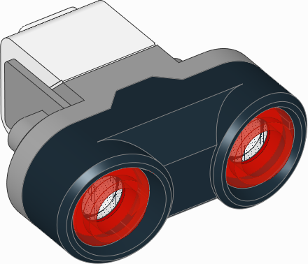
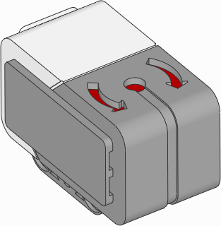

ev3devices – EV3デバイス¶
LEGO® MINDSTORMS® EV3 のモーターとセンサー。
モーター¶

図17 EV3互換モーター。矢印はデフォルトの正の回転方向を示します。
-
class
Motor(port, positive_direction=Direction.CLOCKWISE, gears=None)¶ 内蔵回転センサー付きモーターを制御するための汎用クラス。
パラメータ: 計測
-
speed()¶ モーターの速度を取得します。
戻り値: モーターの速度。 戻り値の型: 回転速度: deg/s
停止
-
stop()¶ モーターを停止し、自由に回転する状態にします。
モーターは摩擦によって徐々に停止します。
-
brake()¶ モーターを受動的にブレーキします。
モーターは摩擦に加えて、まだ動いている間に発生する電圧によって停止します。
-
hold()¶ モーターを停止し、現在の角度に積極的に保持します。
動作
-
run(speed)¶ モーターを一定の速度で回転させます。
モーターは指定した速度まで加速し、新しいコマンドを受け取るまでその速度で回転し続けます。
パラメータ: speed (回転速度: deg/s) – モーターの速度。
-
run_time(speed, time, then=Stop.HOLD, wait=True)¶ モーターを一定の速度で、指定した時間だけ回転させます。
モーターは指定した速度まで加速し、その速度で回転し続けてから減速します。一連の動作はちょうど指定した
timeの長さになります。パラメータ: - speed (回転速度: deg/s) – モーターの速度。
- time (時間: ms) – 動作の長さ。
- then (Stop) – 停止した後に行う動作。
- wait (bool) – プログラムの続きを実行する前に、動作が完了するまで待機します。
-
run_angle(speed, rotation_angle, then=Stop.HOLD, wait=True)¶ モーターを一定の速度で、指定した角度だけ回転させます。
パラメータ: - speed (回転速度: deg/s) – モーターの速度。
- rotation_angle (角度: deg) – モーターが回転する角度。
- then (Stop) – 停止した後に行う動作。
- wait (bool) – プログラムの続きを実行する前に、動作が完了するまで待機します。
-
run_target(speed, target_angle, then=Stop.HOLD, wait=True)¶ モーターを一定の速度で、指定した目標角度に向かって回転させます。
回転方向は目標角度に基づいて自動的に選択されます。
speedの正負は関係ありません。パラメータ: - speed (回転速度: deg/s) – モーターの速度。
- target_angle (角度: deg) – モーターが回転して到達する角度。
- then (Stop) – 停止した後に行う動作。
- wait (bool) – プログラムの続きを実行する前に、モーターが目標に到達するまで待機します。
-
run_until_stalled(speed, then=Stop.COAST, duty_limit=None)¶ モーターがストールするまで一定の速度で回転させます。
パラメータ: - speed (回転速度: deg/s) – モーターの速度。
- then (Stop) – 停止した後に行う動作。
- duty_limit (割合: %) – このコマンド実行中のトルク制限。ギアやレバーの機構にモーターの最大トルクをかけないようにするのに便利です。
戻り値: モーターがストールした角度。
戻り値の型:
-
dc(duty)¶ 指定したデューティ比(「パワー」とも呼ばれます)でモーターを回転させます。
このメソッドを使うと、モーターを単純なDCモーターのように使えます。
パラメータ: duty (割合: %) – デューティ比(-100.0から100)。
高度なモーション制御
-
track_target(target_angle)¶ 目標角度を追跡します。
run_target()と似ていますが、通常の滑らかな加速を行わず、できるだけ速く目標角度に移動します。目標角度を連続的に変化させたい場合に便利なメソッドです。パラメータ: target_angle (角度: deg) – モーターが回転して到達する目標角度。
-
control¶ モーターは指定した速度と角度の目標を正確に追跡するために PID 制御を使用します。モーターの
control属性でこの動作を変更できます。利用可能なメソッドの概要は Controlクラス を参照してください。
-
タッチセンサー¶

カラーセンサー¶

赤外線センサーとビーコン¶

-
class
InfraredSensor(port)¶ LEGO® MINDSTORMS® EV3 赤外線センサーとビーコン。
パラメータ: port (Port) – センサーを接続するポート。 -
beacon(channel)¶ リモコンと赤外線センサーとの相対的な距離と角度を測定します。
パラメータ: channel (int) – リモコンのチャンネル番号。 戻り値: リモコンと赤外線センサーとの相対距離(0から100)とおおよその角度(-75から75度)のタプル。 戻り値の型: (相対距離: %, 角度: deg)。リモコンが検出されない場合は ( None,None)。
赤外線リモコンのどのボタンが押されているかを確認します。
このメソッドは一度に最大2つのボタンを検出できます。それ以上のボタンを押すと、有効なデータが得られない場合があります。
パラメータ: channel (int) – リモコンのチャンネル番号。 戻り値: 選択したチャンネルのリモコンで押されているボタンのリスト。 戻り値の型: Buttonのリスト
-
超音波センサー¶

-
class
UltrasonicSensor(port)¶ LEGO® MINDSTORMS® EV3 Ultrasonic Sensor.
パラメータ: port (Port) – センサーを接続するポート。 -
distance(silent=False)¶ 超音波を使って、センサーと物体との距離を測定します。
パラメータ: silent (bool) – Trueを選ぶと、距離の測定後にセンサーをオフにします。他の超音波センサーとの干渉を減らせます。ただし頻繁に行いすぎるとセンサーがフリーズすることがあります。その場合は一度抜いて差し直してください。戻り値: 距離。 戻り値の型: 距離: mm
-
presence()¶ 超音波を検出することで、他の超音波センサーの存在を確認します。
他の超音波センサーがサイレントモードで動作している場合、そのセンサーが測定を行っている間だけ存在を検出できます。
戻り値: 超音波が検出された場合は True、そうでない場合はFalse。戻り値の型: bool
-
ジャイロセンサー¶

-
class
GyroSensor(port, positive_direction=Direction.CLOCKWISE)¶ LEGO® MINDSTORMS® EV3 Gyro Sensor.
パラメータ: -
speed()¶ センサーの速度(角速度)を取得します。
戻り値: センサーの角速度。 戻り値の型: 回転速度: deg/s
-